Documentation
Frequently asked questions (FAQ)
Blog
History
Donations
French
Link Shell Extension (LSE) provides for the creation of
Hardlinks, Junctions,
Volume Mountpoints,
and Windows7/8's Symbolic Links,
(herein referred to collectively as Links) a folder cloning process that utilises
Hardlinks or Symbolic Links and a copy process taking care of Junctions, Symbolic Links, and Hardlinks.
LSE, as its name implies is implemented as a Shell extension and is accessed from Windows Explorer, or similar file/folder managers.
The extension allows the user to select one or many files or folders, then using the mouse, complete the creation of the required Links -
Hardlinks, Junctions or Symbolic Links or in the case of folders to create Clones consisting of Hard or Symbolic Links.
LSE is supported on all Windows versions that support NTFS version 5.0 or later, including Windows XP64
and Windows7/8/10. Hardlinks, Junctions and Symbolic Links are NOT supported on FAT
file systems, and nor is the Cloning and Smart Copy process supported on FAT file systems.
LSE is installed by executing the install program
(HardLinkShellExt_$(platform).exe).
Follow the instructions issued by the program, there are no mandatory
inputs required during installation, it is possible to
change the location into which LSE is installed, the
default is
C:\Program Files\LinkShellExtension
During installation Explorer.exe has to be restarted to make Link Shell Extension active. This means that all pending operations with explorer.exe are interrupted, but with the interactive install you can decide to postpone the explorer.exe restart. A dialog box will give you the choices during installation.
Silent install
/S pops up no prompts during install. If the /S switch is used, explorer.exe will be restarted after installation, to make Link Shell Extension active immediately.
Specify Language
/LANGUAGE passes the language in which LSE shows up. e.g.
HardLinkShellExt_$(platform).exe /S /Language=English Currently English, Chinese, Czech, French, German, Greek, Italian, Japanese, Korean, Polish, Portuguese, Russian, Slovak, Spanish, Swedish, Turkish and Ukrainian are available as valid parameters for the /Language switch.
Specify Directory
When using the silent install a directory can also be specified with the /D switch e.g.
HardLinkShellExt_$(platform).exe /S /Language=English /D=C:\Program Files\LSE
Uninstall
Link Shell Extension can also be uninstalled silently by issuing $LSEInstallDir/uninst-HardLinkShellExt_$(platform).exe /S If the /S switch is used during uninstall, explorer.exe will be restarted after uninstallation, to make Link Shell Extension inactive immediately.
No Check for VcRedist
On some Windows10 machines, there is no need to install the vcredist, or worse: VcRedist can not be installed, but is somehow already on the system. To overcome this the /noredist switch can be passed via command line. e.g.:
HardLinkShellExt_$(platform).exe /noredist
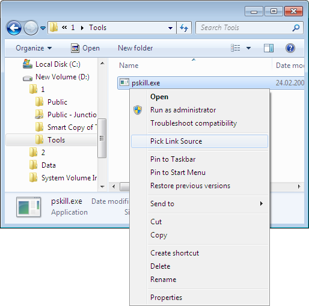
To create the Hardlinks a destination folder must be chosen, by clicking the mouse action button on the destination folder a menu will pop up, which will include the entry - Drop HardLink
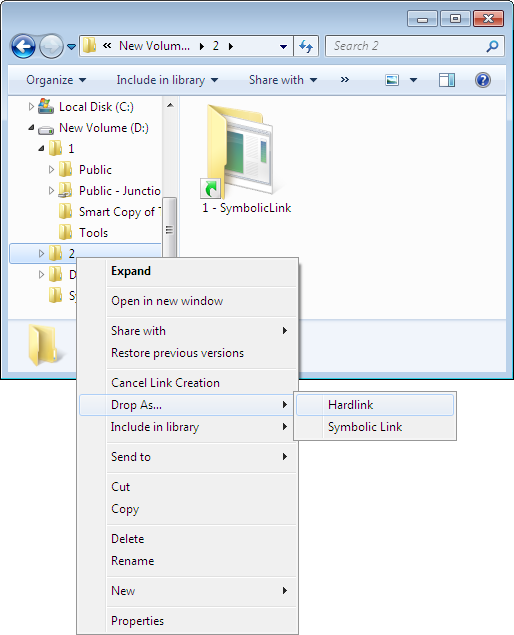
Choosing Drop HardLink will create the hardlinks in the selected destination folder.
Overlay Icons for Hardlinks
To help distinguish hardlinks folders from normal files, an overlay icon is implemented on hardlinks that shows a red arrow icon under the folder.
Overlay icons for Hardlinks can also be customized.
In Windows 2000 and XP Hardlinks can also be dropped via an Action button click in the "white space" of Windows Explorer's right pane and choosing Drop HardLink from the popup menu. It should be noted this feature is only guaranteed to work in Windows Explorer; many Explorer replacements implement an application specific white space action menu that is not readily accessible from general purpose shell extensions such as LSE.

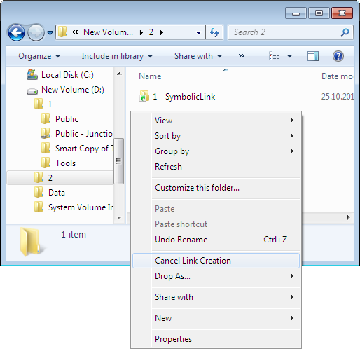
To avoid crowding the popup menu, a submenu is provided that contains the different types of Links applicable to folders.
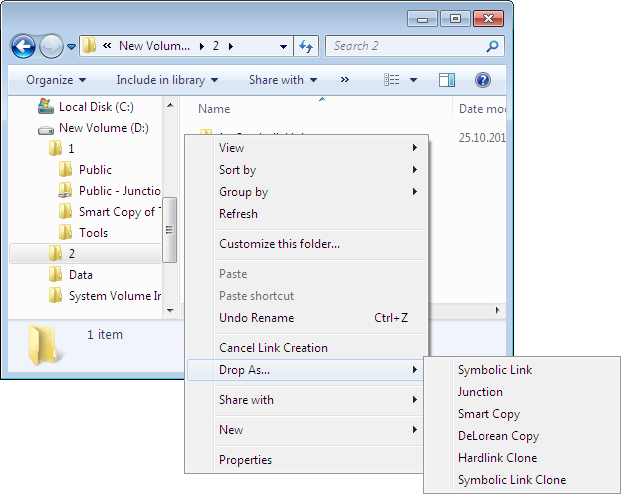
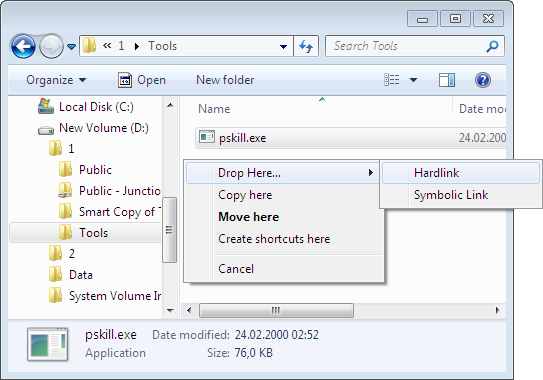
With Windows XP this behaviour is different and LSE behaves under XP accordingly: 'HardLink of $filename'
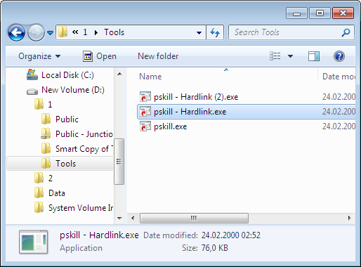
LSE uses the same hydraulics as explorer when it comes to multiple '$filename - Hardlink': It uses numbers to enumerate the multiple hardlinks of one file in the same directory, e.g. $filename - Hardlink (2).$ext.
With Windows XP this behaviour is different and the names are generated like 'Hardlink of $filename (2).
The Auto Rename mechanism is also used when Junctions, Hardlink Clones, Symbolic Links, Symbolic Link Clones, Mountpoints or Smart Copies are created in the same directory.
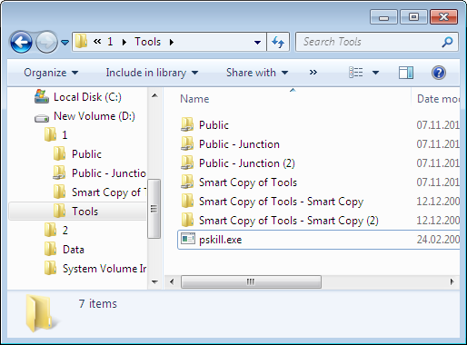
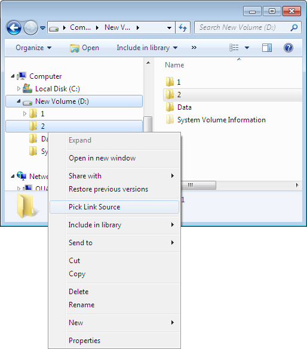
Junctions are created in the same way as Hardlinks, except that the Source Link is a folder rather than a file. Select a folder, click the right mouse button, choose Pick Link Source from the action menu, navigate to the destination folder, click the action button, open the submenu Drop As ... and select Junction:
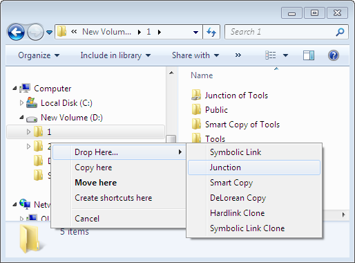
Junctions are marked with a small piece of chain below the folder icon.

Junctions can also be created via Drag and Drop when the selected folders are dragged with the action button pressed to a destination folder; when the right mouse button is released, select the Drop Here ... submenu and then Junction.
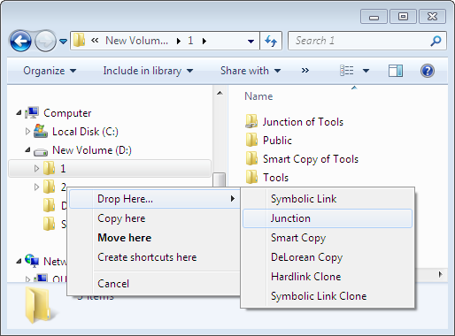
Junctions can be deleted by using the Delete commands from Explorer as usual, if Link Shell Extension is installed, because Link Shell Extension implements a so called CopyHook handler, which intercepts Explorers Delete commands, and thus fixes Explorers problems with junctions.
Link Shell Extension changes Delete commands from Explorer on Junctions to unlinking Junctions, and not deleting the content within a junction, which seems most logical.
Windows7/8/10: With Windows Vista & Windows7/8/10 explorer is natively aware of Junctions, and no interception or CopyHook handler is necessary, Explorer simply works out of the box with junctions. This is also the reason why the Delete Junction menue does not show up on Vista and Windows7/8/10.
To show the origin of a junction, the reference column of a junction shows the path to which the selected junction links.
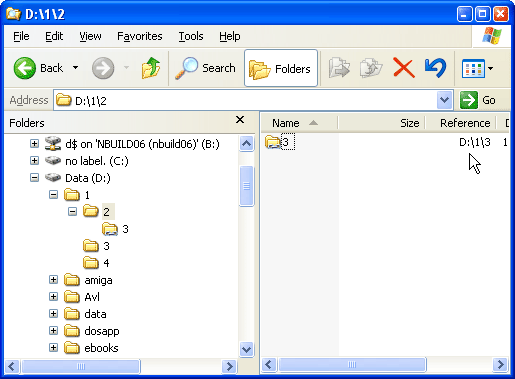
Junctions are a powerful feature, but can also be a dangerous feature without Link ShellExtension precautions under Windows Version < Windows Vista. Nativly Explorer shipped with < Vista becomes unstable if you use normal delete or rename functions on junction folders. Windows Explorer will always terminate abruptly and depending on system settings, Windows XP may do likewise.
Overlay Icons for Junctions
To help distinguish junction folders from normal folders, an overlay icon is implemented on junctions that shows a small three link chain icon under the folder.
Overlay icons for junctions can also be customized.
Junctions can span network drives as long as the target is a mapped network drive. Unfortunately Junctions, which have a UNC Path as target, can be created with LSE, but even Vista seems to contain a bug, which prevents it from dereferencing a UNC Path in a junction, even if LSE correctly sets up the reparse info for UNC junctions. When a UNC target junction is double clicked in explorer the error ERROR_INVALID_REPARSE_DATA(4392), will show up and tell you that the info in the reparse point is illegal, even if it is not.
@Microsoft: Why didn't you enable this feature for junctions, even if the syntax for UNC junctions is defined: \??\UNC\server\share. Any help appreciated.
With Vista and Windows7/8/10 some folders, e.g. c:\Program Files needs elevation for junctions beeing created in. This is why the famous UAC dialog must be acknowledged.
To be exact: Only the creation of directories needs elevation in such situations, but creating an empty directory is a vital part of creating a junction. The DeviceIoControl(), which does the real work in creating junctions would work without elevation.
Symbolic Link
Mountpoint
To use this feature simply select an existing directory as Link Source and drop it over an already existing Junction/Symbolic Link/Mountpoint. By selecting the 'Drop as ... Replacement Junction/Symbolic Link/MountPoint' from the action menu, the target of an already existing Junction/Symbolic Link/MountPoint is replaced by the newly picked target.
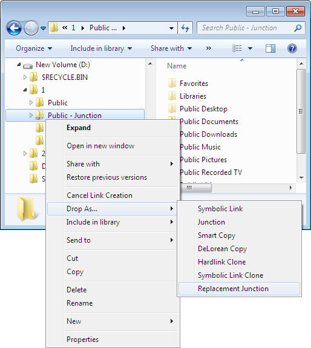
The same can be achieved via Drag an Drop for Symbolic Link Directories, Junctions and Mount Points, but not for Symbolic Link Files. Symbolic Link Files have to be repaired by the 'Pick Link Source', 'Drop as ... Replacement Symbolic Link' repair alternative.
When the backup mode is selected the ACLs of the Junction/Symbolic Link/MountPoint are preserved.
Symbolic Link
Mountpoint
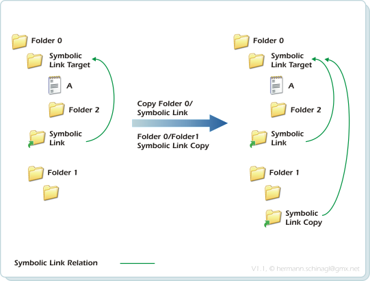
To use this feature simply select an existing Junction, Symbolic Link or MountPoint as Link Source and drop it over an already existing directory. By selecting the 'Drop as ... Junction/Symbolic Link/MountPoint Copy' from the action menu, the Junction/Symbolic Link/MountPoint is copied to the target and the relation is adjusted
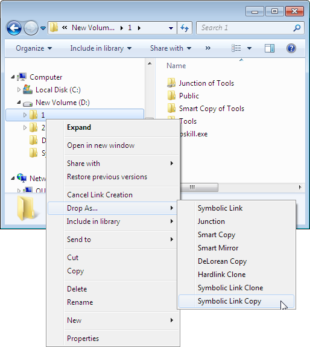
The same can be achieved via Drag an Drop for Symbolic Link Directories, Junctions and Mount Points.
When the backup mode is selected the ACLs of the Junction/Symbolic Link/MountPoint are preserved.
With hardlinks it behaves as follows:
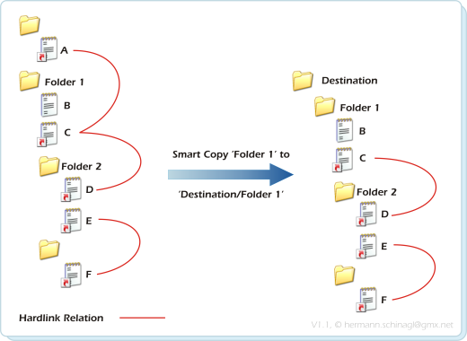
By closely looking at the above picture one can find three different types of files:
| Normal Files |
The file B is a normal file. It gets copied as any other copy tool would do.
|
| Saturated Hardlinks |
The files E and F are hardlinked together. In LSE
terms they are called Saturated Hardlinks, because the reference count,
which is here 2, matches the number of occurrences below 'Folder 1', which is here 2.
In General: A hardlink is called Saturated with respect to a folder F, if the number of occurrences below the folder F matches the reference count. Saturated Hardlinks can be copied completely via Smart Copy. |
| Unsaturated Hardlinks |
The File A, C, D are hardlinked together. In LSE terms they are called Unsaturated Hardlinks, because the reference count,
which is here 3, does not match the number of occurrences below 'Folder 1', which is here 2. Only C and D are below Folder 1.
In General: A hardlink is called Unsaturated with respect to a folder F, if the number of occurrences below the folder F is smaller than the reference count. Unsaturated Hardlinks can only be partially copied by Smart Copy. In the above example C and D are hardlinked together in the destination location, but the hardlink to A is broken. This means that the reference count of C and D is 2 with the destination location. |
With junctions or symbolic link directories the default behaviour during smartcopy is as follows:

By closely looking at the above picture one can find three different types of folders/junctions:
| Normal Folders |
The folder 'Folder 3' is a normal folder. It gets copied with its content as any other copy tool would do. |
|
Inner Junctions Symlinks |
The folder 'Inner Junction/Symlink' is targeted at 'Inner
Junction/Symlink Target'. In LSE terms this kind of folder is called Inner Junction/Symlink, because its target points to a folder, which is below
the common anchor 'Folder 1'.
Inner Junctions/Symlink are restored properly via Smart Copy in the destination location. |
|
Outer Junctions Symlinks |
The folder 'Outer Junction/Symlink' is targeted at the
folder 'Outer Junction/Symlink Target'. In LSE terms this kind of folder
is called Outer Junction/Symlink, because its target points to a folder,
which is in parallel and thus outside the anchor 'Folder 1'.
Outer Junctions/Symlink can be handled in three different ways. Please see the section on Outer Junction/Symlink Handling. |
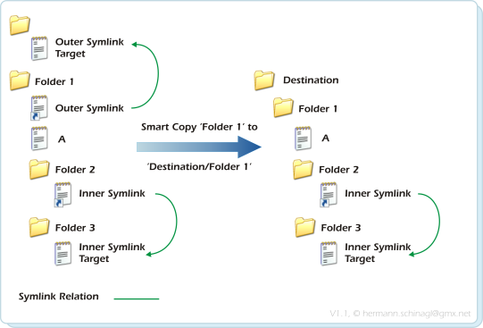
By closely looking at the above picture one can find three different types of files/symbolic links:
| Normal Files |
The file A is a normal file. It gets copied as any other
copy tool would do.
|
|
Inner Symbolic Links |
The symbolic link 'Inner Symlink' is targeted at 'Inner
Symlink Target'. In LSE terms this kind of symbolic link is called Inner Symlink, because its target points to a file, which is
below the common anchor 'Folder 1'. Inner Symlink are restored properly via Smart Copy at the destination location.
|
|
Outer Symbolic Links |
The symlink 'Outer Symlink' is targeted at the folder
'Outer Symlink Target'. In LSE terms this kind of symbolic link is called
Outer Symlink, because its target points to a file, which is in parallel
and thus outside the anchor 'Folder 1'.
Outer Symlink are handled by Smart Copy depending on the Outer Junction/Symbolic Link handling. |
...navigate to the destination folder, press the action button, open the Drop As ... submenu and select Smart Copy:
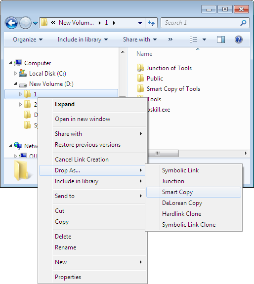
Smart Copy is a must if e.g.. the whole content of a hard disk, which has lots of hardlinks/junctions/symbolic links, should be copied to another hard disk. During the Smart Copy operation empty folders get copied too and the date/time stamps of folders/junctions/symbolic links are also restored at the corresponding destination locations.
Because Smart Copy creates inner hardlinks/junctions/symbolic links, this feature is only available on NTFS volumes.
If Smart Copy takes longer than 250msec a progressbar shows the status of the smart copy operation.
Smart Copy also processes all available alternative NTFS streams of a file.
If items are already available in the destination, Smart Copy only copies when the Files/Symbolic/Junctions/MountPoints are newer than the already existing items.
When restoring Symbolic links under Windows7/8/10 and Windows Vista, LSE forks its helper LSEUacHelper.exe to forwards this operation to it, because the creation of symbolic links needs elevation, and thus brings up the famous UAC dialog.
LSE only issues its helper LSEUacHelper.exe if a symlink is among/below the selected folders, so it saves you from one UAC prompt if you don't have symlinks among your selection.
Smart Copy by default creates relative symbolic links during the Smart Copy operation.
Command Line
The Smart Copy functionality is also available via command line from n.exe via the --copy command line switch.
Outer Junctions/
Symbolic Links
| Crop |
Crop breaks links to Outer Junctions/Symlink directories in the destination.
Crop also applies to Outer Symlink Files. 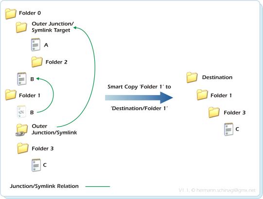 In the above example Folder1 is copied to Destination/Folder1, butOuter Junction/Symlink is not available in the destination, because Folder1/Outer Junction/Symlink pointed to Folder0/Outer Junction/Symlink Target, which is not below Folder1. The objective behind cropping Outer Junctions/Symlink Directories is to get a pure copy during Smart Copy, Smart Mirror, Delorean Copy and Clone without connections to the source. Enabling Crop for Outer Junction/Symbolic Links Crop can be selected via the configuration tool. |
| Unroll |
Unroll follows Outer Junctions/Symlink Directories
and rebuilds the content of Outer Junctions/Symlink Directories inside the hierarchy
at the destination location.
Unroll also applies to Outer Symlink Files, which means, that unroll causes the target of Outer Symlink Files to be copied to the destination location. 
In the above example Folder1 is copied to Destination/Folder1, andOuter Junction/Symlink and all the files/directories below Outer Junction/Symlink Target are copied to the folder Outer Junction/Symlink in the destination. The objective behind unrolling Outer Junctions/Symlink Directories is to get everything with which the source is connected and rebuild it as seperate copy in the destination. It resembles the 'hair of the elephant' pattern: Pull on a hair of an elephant, and get the whole elephant. Unroll is the default behaviour for Smart Copy, Smart Mirror, Delorean Copy and Clone. Advanced thoughts on Unrolling The picture above was just the simplest case, because Unroll does much more when it encounters complex situations. Think of a outer junctions/symbolic links, which itself contains junctions/symbolic links, which are inner with respect to the first outer junction symbolic link: 
In the above example Folder1 is copied to Destination/Folder1, and Outer Junction/Symlink and is unrolled as expected, but since Junction/Symlink is a inner junction with respect to Outer Junction/Symlink Target, the junction/symlink relation is restored in the destination. This kind of nesting can be much more complex: 
In the above example Folder1 is copied to Destination/Folder1, and Outer Junction/Symlink and is unrolled as expected, but then it starts to get fascinating, because we have two levels of outer junctions/symlinks which all have respective inner junctions/symlinks, and which are restored properly. Once you digged yourself through the above picture, you got it. It is not simple I know, but it is necessary to properly unroll. And complexity increases if symbolic link files are within unrolled outer junctions/symbolic links: 
In the above example Folder1 is copied to Destination/Folder1, and Outer Junction/Symlink and is unrolled as expected, but it contains Inner Outer Symlink which points to Inner Outer Symlink Target and this is a inner junction/symbolic link with respect to Outer Junction/Symlink Target But worth mentioning is the Symbolic Link Outer Symlink, which would be a definitive outer symbolic link, but since its targets parent-directory Outer Junction/Symlink Target is unrolled, Outer Symlink becomes an inner symbolic link with respect to Folder1. File1 Symlink is also a outer symbolic link, but its target parent-directory Folder2 is not that lucky to get unrolled, so in the destination File1 Symlink is not a symbolic link any more, but a copy of the symbolic links' target. Nested Reparse Points are also an interesting use case, which the algorithm has to tackle with: 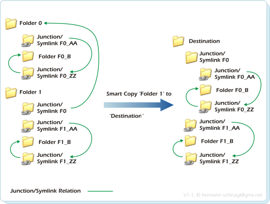 In the above example Folder1 is copied to Destination, and Junction/Symlink F0 and is unrolled as expected, but it contains inner nested reparse points. Nested means Reparse point pointing to Reparse Points The Unroll functionality also opens up the possibility to have circular Junction/Symbolic Link relations among a set of copied items: 
In the above example Folder1 is copied via the --unroll option to Destination/Folder1. Smart Copy/Smart Mirror and Delorean Copy operations can deal with the above shown circularities and break circularities by not following the affected Junction/Symbolic Link. Junctions/Symbolic Links can also point to FAT drives or other NTFS drives requiring as a prerequisite unique Disk-IDs on all disks, which are chained together via Junctions/Symbolic links: 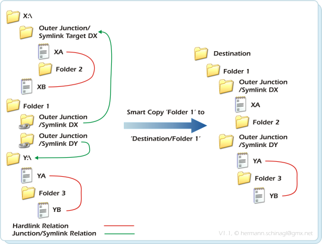 Hardlink siblings are found by matching the per NTFS volume uniqe file-id, but if more volumes are chained together it might happen that the same file-ids can be found on two different NTFS volumes. To address this all operations use the disk-id and the file-id to match hardlink siblings. Furthermore it is not allowed to have the disk-id 0xffff-ffff, because the algorithms use this as internal indicator of a FAT drive. The Unroll option also allows to point multpile junctions to the same target location, which causes the algorithms to traverse the same items many times: 
At the first glance multiple traversation of items looks simple, but for files this means that multiple traversed files are the same in the destination and are hardlinked together. So don't be confused when you see hardlinks, which have never ever been there before. Copying Junction/Symbolic Links from mapped network drives also needs extra care, because junctions on the remote machine relate with path references only valid on the remote machine to each other: 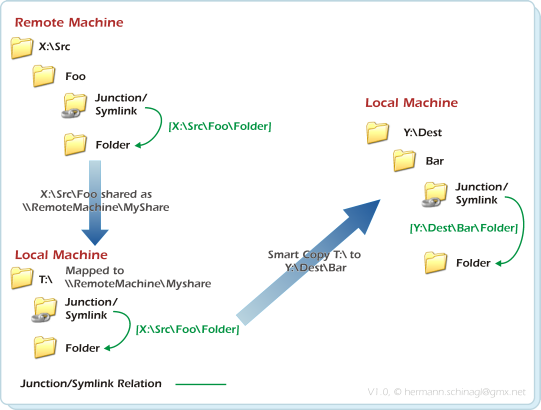 The example in the above picture shows such a situation
|
| Splice |
Splice reconnects Outer Junctions/Symlink directories in the destination to their original targets.
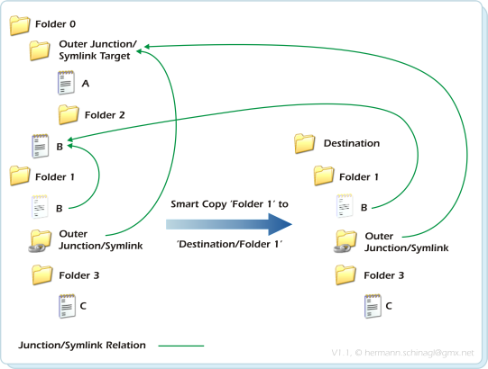 In the above example Folder1 is copied to Destination/Folder1, and Outer Junction/Symlink is available in the destination as junction, which points to the original location Outer Junction/Symlink Target. The objective behind splicing Outer Junctions/Symlink Directories to its original location is to get a copy during smartcopy, but to reuse Outer Junctions/Symlink Directories source locations. The Splice functionality is also useful, when mountpoints should be copied. Mountpoints are very similar to Junctions, but point to a path always starting with \\?\VolumeGuid{}. 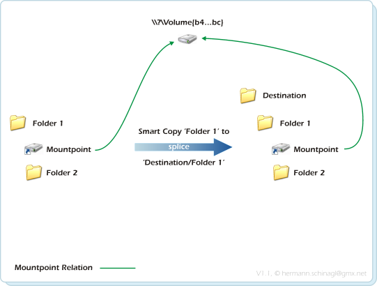 Enabling Splice for Outer Junction/Symbolic Links Splice can be selected via the configuration tool. |

In the above example Location1 and Location2 are copied to Destination. Location2/Junction20 is treated as inner junctions to Location1/Folder10 in the source, and that's why Destination/Junction20 points to Destination/Folder10 in the Destination.
The objective behind this is to treat all junctions/symlinks as inner junctions/symlins as long as they are in the set of source folders.
With LinkShell Extension this works as follows:
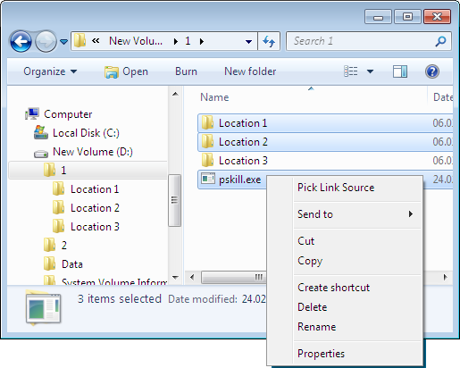
In the above example all content from Location 1 and Location 2 and pskill.exe are selected. Possible junctions/symbolic links in Location 1 pointing to Location 2 or vice versa are treated as inner junctions/symbolic links, because all selection is treated as a common root.
With junctions or symbolic link directories it behaves as follows:
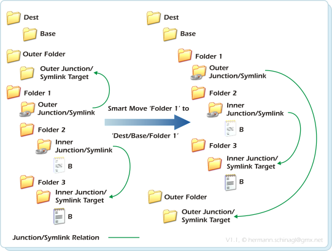
By closely looking at the above picture one can find three different types of folders/junctions:
| Normal Folders |
The folder 'Folder 3' is a normal folder. It gets moved with its content straight forward.
|
|
Inner Junctions Symlinks |
The folder 'Inner Junction/Symlink' is targeted at 'Inner Junction/Symlink Target'.
In LSE terms this kind of folder is called Inner Junction/Symlink, because its target
points to a folder, which is below the common anchor 'Folder 1'. Inner Junctions/Symlink are updated properly via Smart Move in the destination location.
|
|
Outer Junctions Symlinks |
The folder 'Outer Junction/Symlink' is targeted at the folder 'Outer Junction/Symlink Target'.
In LSE terms this kind of folder is called Outer Junction/Symlink, because its target
points to a folder, which is in parallel and thus outside the anchor 'Folder 1'.
Outer Junctions/Symlinks are not touched by Smart Move and thus stay connected to their respective target. Please note that this is different to Smart Copy, which has 3 different ways to deal with Outer Junctions/Symbolic Links.
|
The Smart Move functionality is integrated into Explorer seamlessly, so that you don't have to do anything special. Simply drag a folder in explorer to its destination location, or e.g. press F2 in Explorer to rename a directory and LSE will intercept this operation under the hood, takes care of junctions or symbolic links, and will update them.
Intercepting move and rename operation means, that LSE takes over control before rename/move, and recursivley searches the selected folder for junctions or symbolic links. But searching large amounts of files and folders takes time, so LSE will show a progress bar when searching takes longer than 250msec.
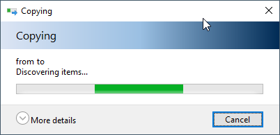
With Vista & Windows7/8/10 LSE calls its UAC helper LSEUacHelper.exe if it has to update symbolic links, so don't be afraid if you get a UAC prompt during moving of folders.Smart Move creates relative symbolic links during the Smart Move operation.
Enabling/Disabling Smart MoveSmart Move can be switched on/off via the configuration tool
Command Line
The Smart Move functionality is also available via command line from ln.exe
via the --move command line switch.

A folder tree might also contain Junctions or Symbolic Links. The clone process recreates inner junction/symbolic links at the destination location very similar as Smart Copy does.

Outer Junctions/Symbolic links are recreated with respect to the specified Outer Junction/Symbolic Link handling. e.g.
With Windows Vista and Windows7/8/10 this cloning process is also available with Symbolic Links instead of Hardlinks.

Clones are created in the same way as e.g Junctions. Select a folder, click the Action button, choose Pick Link Source from the action menu...
...navigate to the destination folder, press the action button, open the Drop As ... submenu and select HardLink Clone:
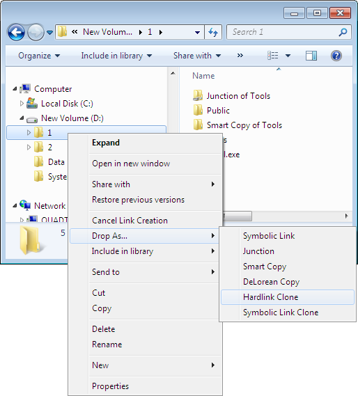
... or with Windows Vista or Windows7/8/10 choose Symbolic Link Clone to create clones of existing tree structures.

HardLink and Symbolic Link Clones can also be created via Drag and Drop, select a folder and drag with the action button depressed to a destination folder. When the action button is released open the Drop Here... submenu and select HardLink Clone or with Windows Vista and Windows7/8/10 Symbolic Link Clone:
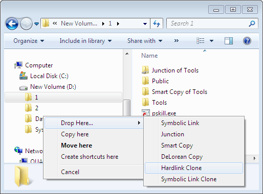
HardLink or Symbolic Link Clones are useful if you need to replicate a folder tree at a different location. The disk space required is minimal because the new structure consists entirely of NTFS directory entries with no real amount of actual data storage.
If both files and folders are selected as Source Links and dropped as a HardLink Clone then the selected files are dropped as Hardlinks alongside the HardLink Clones.
Because Clones use Hardlinks or Symbolic Links, they are only available within an NTFS volume. Hardlink Cloning can not replicate the folder structure from one disk volume to a different volume, because Hardlinks are limited to operation on a single volume. Symbolic Link Clones can be used to create volume spanning Clones, but only on Vista or Windows7/8/10
When creating Clones under Windows7/8/10 and Windows Vista, LSE forks its
helper LSEUacHelper.exe to forwards this operation to it, if the folder tree
contains symbolic links, because the creation of
symbolic links needs elevation, and thus brings up the
famous UAC dialog.
LSE only issues its helper LSEUacHelper.exe if a symlink is among/below the selected
folders, so it saves you from one UAC prompt if you don't have symlinks among your selection.
Command Line
The Clone functionality via Hardlinks or Symbolic Links is also available via
command line from ln.exe
via the --recursive command line switch.
- Smart Mirror copies if the timestamp of items in the Destination is different from the Source.
- Delete files not anymore available in Source from Destination.
Smart Mirror is created in the same way as e.g Junctions. Select a folder, click the Action button, choose Pick Link Source from the action menu...
...navigate to the destination folder, press the action button, open the Drop As ... submenu and select Smart Mirror:
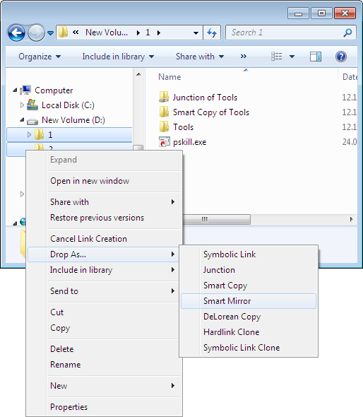
Smart Mirror is a little bit different with respect to Auto Rename, because it expects a already existing folder in the destination location, which has the same name as the source folder, so that it can do the mirror.
The following picture gives an overview what DeLorean Copy is about

In general a DeLorean Copy has 3 principals: Source(t), InitialBackup and Backup(n).
|
Phase 1: Intial SmartCopy
|
The folder Source(t) is initially copied to InitialBackup. This is shown by the blue arrow.
|
|
Changes happen |
During this phase the files under source change, and
Source(t) becomes Source(t+1).
|
|
Phase 2: Hardlink Clone |
The folder InitialBackup is Hardlink Cloned to
Backup1, which ties InitialBackup and Backup1. This is shown
by the red arrow.
|
|
Phase 3: Mirror |
Mirror the folder Source to Backup1. This
is shown by the green arrow:
|
The point is that all files in Backup1 are transparently accessible, but really little space is used, because not all files in the Source(t+1) changed, so that there was only the need to effectively copy over a few files from Source(t+1) to Backup1.
This can be repeated on and on. The second round would be using Source, Backup1 and Backup2 for DeLorean Copy:
|
Changes happen |
During this phase the files under source change, and
Source(t+1) becomes Source(t+2).
|
|
Phase 2: Hardlink Clone |
The folder Backup1 is Hardlink Cloned to Backup2,
which ties Backup1 and Backup2. This is shown by the red arrow.
|
|
Phase 3: Mirror |
Mirror the folder Source(t+2) to Backup2.
This is shown by the green arrow:
|
DeLorean Copies are created in the same way as e.g Junctions. Select a folder, click the Action button, choose Pick Link Source from the action menu...
...navigate to the destination folder, press the action button, open the Drop As... submenu and select DeLorean Copy:
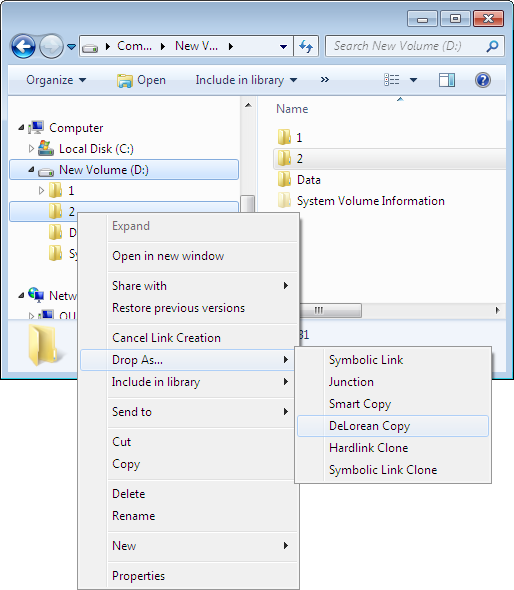
If a DeLorean Copy was dropped the first time onto a directory, the operations, which are described under
phase 1 in the above descriptions, namely a Smart Copy, is performed. Link Shell Extension automatically
generated the folder name for the destination by appending a timestamp.
Any successive drop of a directory onto the a destination directory initates Phase 2 and Phase 3 from the
above description, namley it does the Hardlink Clone from the former backup onto the current backup and
furthermore does mirror the source onto the current backup.
A directory holding many copies may look like this.
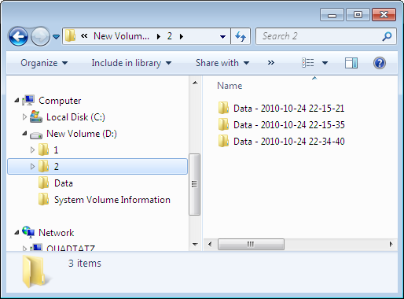
Limitations
It is little known, but NTFS has a limit to create a maximum of 1023 hardlinks to one file. For
DeLorean Copy this means that it will display an error message if this limit is exceeded, because
exceeding this limit means loss of data among the most recent backup sets:
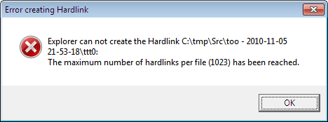
The reason for exceeding this limit could either be, that there have been more than 1023 backup sets
but no hardlinks within the Source, or there are hardlinks within the Source and less than 1023
backup sets.
The DeLorean Copy submenue will not appear if more than one folders are selected as source.
DeLorean Copy is long path safe which means it can handle more than 256 characters in pathes. This is
important, because placing a copy with quite long path, but still below 256 characters path length,
to destination locations might result in combined path length greater than 256 character. In such a situation
no data loss must happen, which Delorean copy guaranties with beeing 'long path safe'.
Please make sure that Explorer can not show you the result of such a copy, but the files are there.
Alternative explorers like SpeedCommander can handle this.
Command Line
DeLorean Copy functionality is also available via ln.exe
Backup mode enables LSE to also copy ACLs and Encrypted Files from all directories, even the ones without access for the current users.
- With Windows7/8/10 LSE always forks its helper process LSEUacHelper.exe, and thus raises the UAC prompt for elevation and password verification.
- With WindowsXP LSE only goes into Backup Mode, when the current user has the necessary privileges.
- Alternative Streams on files and folders
- EA Records on files and folders (rarely used)
- Reparse Info
- File Attributes
- Timestamps: Creation Time, Last Access Time, Last Write Time
- Sparse Files and Alternative Sparse Streams
- Encrypted files
- ACLs
Backup Mode is disabled by default, and can be turned on via the LSE configuration tool.
To perform backup operations a user must hold the SE_BACKUP_NAME and SE_RESTORE_NAME privileges.
An out of the box Wndows configuration assigns the Backup-Operator and Administrator group these privileges, but
additionally the above privileges can be assigned individually to certain users or groups.
Assigning privileges can be accomplished
By gpedit.msc
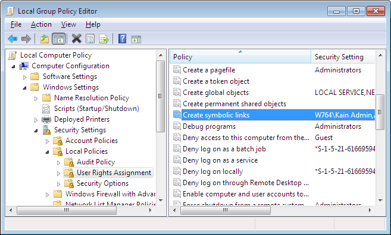
and navigating to
"Computer Configuration" ->"Windows settings" -> "Security Settings" -> "Local Policies" -> "User Rights Assignments" -> "Backup files and directories"
"Computer Configuration" ->"Windows settings" -> "Security Settings" -> "Local Policies" -> "User Rights Assignments" -> "Restore files and directories"
Without gpedit.msc
Download PolsEdit and add users or groups, who should be able to run
backups, to the SE_BACKUP_NAME and SE_RESTORE_NAME privileges.
Point Support
Volume Mountpoints are a feature of NTFS version 5.0, which provides functionality to map complete local volumes onto arbitrary disk locations. Volume Mountpoints were not supported in NTFS Version 4.0
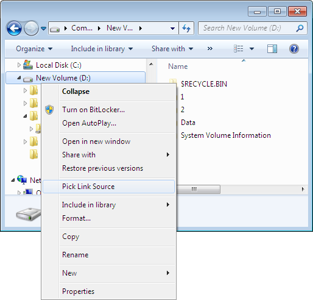
Volume Mountpoints are created in the same way as Hardlinks, except that the Source Link is a volume rather than a file. Select a local volume, click the right mouse button, choose Pick Link Source from the action menu, navigate to the destination folder, click the action button, open the submenu Drop As ... and select Volume Mountpoint:
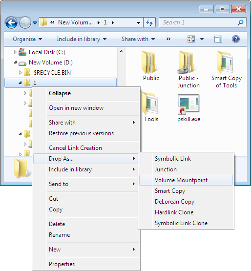
Volume Mountpoints can also be created via Drag and Drop when the selected local volume is dragged with the action button pressed to a destination folder; when the right mouse button is released, select the Drop Here ... submenu and then Volume Mountpoint.
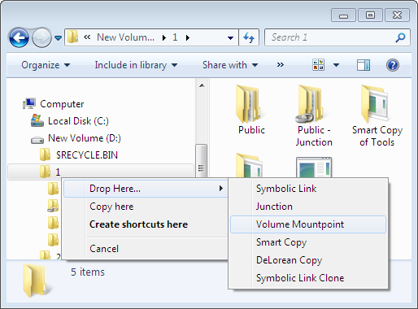
Mount Points can be deleted by using the Unmount Volume command from Explorer as usual.
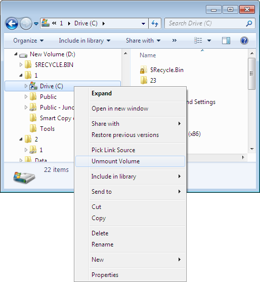
To show the origin of a Volume Mountpoint, the reference column of a Volume MountPoint shows the volume which is mounted onto the selected path.
Make sure that only local volumes can be mounted but not mapped network drives.
Vista & Windows7/8/10: With Vista & Windows7/8/10 the creation and deletion of Volume Mountpoints is bound to successful elevation, which means that the famous UAC dialog must be acknowledged.
@Microsoft: Why is it not possible with Windows7/8/10 & Vista to create a Volume Mountpoint under e.g. 'c:\Program Files'. The return value on the CreateMountPoint() call is ERROR_INVALID_PARAMETER, which is always the 'Error I don't know what to do' thrown by Windows. Please fix this!
To show the reference counts, a column can be enabled in Explorers right pane by action clicking the Titles row of the details view.
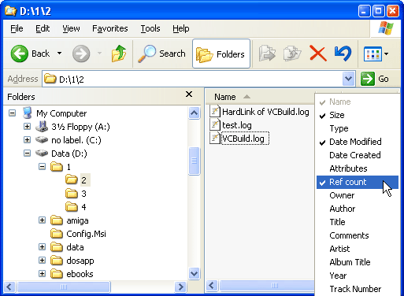
After enabling the reference column the reference count is shown for each file. This feature is only available in Windows 2000 and XP, it is not supported in Windows NT4.
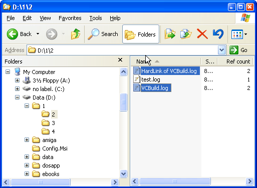
Vista & Windows7/8/10: The column, which shows the reference count and the origin of the junction is not available, because the way Vista and Windows7/8/10 handles user defined columns has been completely revamped by Microsoft and all applications working with so called ColumnHandlers will not work. Microsoft did such a good job in changing interfaces, so that it is impossible to revive this feature in Windows7/8/10. Sorry.
Link Shell Extension also supports so called Explorer Property Sheets, which means that if a file or directory property in explorer is opened, Link Shell Extension adds its own tab to show the properties of a hardlink, junction, volume mountpoint or symbolic link.
This additional tab only shows up in the file or directory properties, if the file or directory is a hardlink, junction, volume mountpoint or symbolic link, otherwise this tab is not available.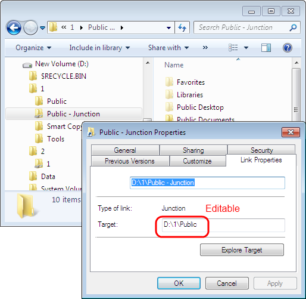
Explore
For junctions, volume mountpoints or symbolic links this dialog also shows
a 'Explore Target' button, which opens an explorer in the specified directory.
Edit
For Junctions, Symbolic Links or Mountpoints the target field can be edited, and after either pressing the Apply button
or leaving the Link Property dialog with ok, the changes are applied to the Junction, Symbolic Link or Mountpoint.
If the Backup Mode is enabled, the ACL of the edited Junction, Symbolic Link or Mountpoint is preserved.
Vista and Windows7/8/10
Creating a Symbolic Link is essentially the same as the other Link creation processes. Action click on the selected file(s) and select Pick Link Source(s) from the action menu.
Under Vista/W7 when the destination folder is action clicked the menu contains a Drop As ... submenu, to create a Symbolic Link select SymbolicLink from the submenu. Unlike Hardlinks Symbolic Links can span storage volumes.
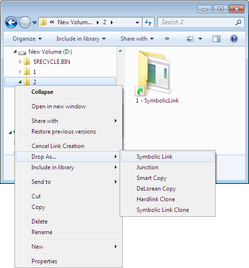
If both files and folders are selected as the Source Links and dropped as a Symbolic Link Clone then the selected files are dropped as Symbolic Links alongside newly created Symbolic Link Clone folders.
Symbolic Links can also be created between directories.
Relative versus absolute symbolic link target pathnames
The target of a symbolic link can either be
- a fully qualified path starting at the root of a drive, e.g e:\data\cpp\myfile.txt
- or can be be specified relativeley, e.g ..\..\data\cpp\myfile.txt
The configuration tool can switch Link Shell Extension in either
relative or absolute mode.
Overlay Icons for Symbolic Links
To help distinguish Symbolic Links from normal files/directories, an overlay icon is implemented on symbolic links that shows a light green arrow icon under the folder.

Overlay icons for Symbolic Links can also be customized.
@Microsoft: Symbolic links without elevation: Lets see if this paragraph
is read by someone. I don't know if it is a bug or a feature, but one
can create symbolic links without elevation, if you create a hardlink
from a symbolic link. That sounds weird, but it works. And by a closer
look at this stuff, it can be seen, that LSE really uses CreateHardlink()
and a symbolic link is created. MS guys! Your opinion?
@Microsoft: Symbolic can span network drives as long as the target is a drive letter mapped drive, but it fails for UNC names in symbolic link target with error ERROR_LOGON_FAILURE(1326), even if the network is connected properly.
With Vista and Windows7/8/10 it is possible to enumerate all hardlink siblings to a file in constant time. Simply select a hardlinked file and select Properties from the right click action menu:
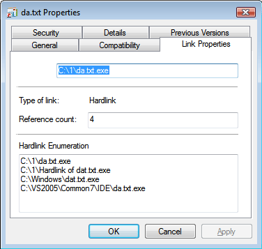
Unfortunately this feature is currently only available with Vista since the Win32 API calls to enumerate hardlinks are not available with XP or W2K.
Under XP reading and processing the unique file ID of all filenames on a disk is necessary to gather the same information. Since this operation is timeconsuming, the siblings of a hardlinked file are not shown immediately after opening the properties tab, but the 'Enumerate Siblings' button must be pressed.
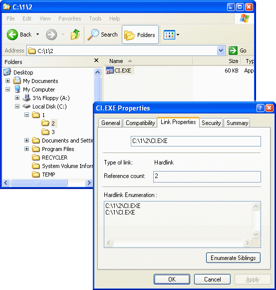
Enumeration of all siblings under XP can take time, because in the worst case all files contained on a logical volume must be at least opened for the filename.
The Hardlink Enumeration functionality is also available via command line from ln.exe via the --enum or the --list command line switch.
One of the major Windows7/8/10 changes was the so called User Account Control (UAC).
Due to UAC some API calls need elevation to administrative level, and this elevation must be acknowledged via the below shown dialog box. Unfortunately,
and I still can't believe this, the API call CreateSymbolicLink is a call, which needs elevation, and thus causes this annoying dialog box come up every time a symbolic
link is created.
So if you see the below box, and the program asking for elevation is LSEUacHelper.exe, it is Link Shell Extensions contribution to UAC and you must acknowledge it to get
Symbolic Links created.
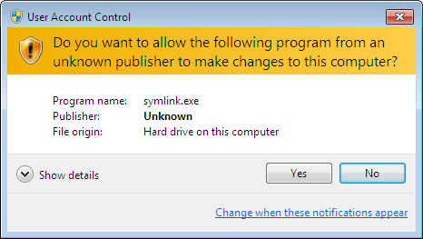
UAC will be the reason, that many applications simply either will not work, or are not useable with Windows7/8/10. They are not useable, because
privileged API calls and non privileged API calls are mixed in the code, and first need to be separated by architectural means into an separate .exe, which gets elevated,
and an .exe for the rest of the coding.
Many applications will simply fail, because calls like CreateProcess(), which are very common, do not work, if the process started with it needs elevation. Well the
story goes on and on, and Link Shell Extension is a very small application, but to walk the learning curve was a hard way, especially because the documentation
was rather difficult to get.
I guess the main protection of UAC is that many small legacy apps are impossible to rewrite for Windows7/8/10, and they simply can not be used with Windows7/8/10 efficiently.
One way to come around the UAC prompt for the creation of Symbolic Links is to globally allow users to create Symbolic Links by changing the policy.
With gpedit.msc
Start gpedit.msc from the command line and grant/revoke specific users the permissions: Under
"Computer Configuration" ->"Windows settings" -> "Security Settings" -> "Local Policies" -> "User Rights Assignments" -> "Create Symbolic Links".
Without gpedit.msc
Download PolsEdit and add users to SE_CREATE_SYMBOLIC_LINK_NAME.
Linkshell Extension can deal with the above granting of privileges, and if the Symblic Link Privilege is available avoids the UAC prompt.
Developer mode in Windows10
Another way to come around the UAC prompt would be to
enable the developer mode,
which is available since Windows10/14972.
This feature is used by Link Shell Extension, to enable the creation of
so called Remote Hardlinks, Remote Junctions, or Remote Symbolic Links. e.g.
- Map a network share
- Pick a file from that share
- Drop the file as Hardlink within the same share
A Hardlink has been created, which can be easily verified

Furthermore SMB1.0 also reports the reference count for Hardlinks and the junction origin for Junctions, which enables Link Shell Extension to show the properties dialog for remote files. Currently the reference count of a hardlink is reported via SMB1.0 in 90% correctly, so please be aware of this restriction.
@Microsoft: Why does this happen in 90%? I have scanned my code in the meantime many times, and it is obvious, that the same call sometimes succeeds and sometimes not. Why??? If you wanna hunt down a bug in your code, please contact me!
LSE supports both, mapped network drives and UNC paths.
Mapped but not available network drives can in general be the reason for sloppy explorer startup performance. Delays of a few seconds can be experienced if explorer has to check all drive mappings, especially the ones which are not available. This gets worse, if LSE also checks the status of all drives.
To workaround this caveat the Remote Capabilities of Link Shell Extension
can be switched on/off via the configuration tool.
Remote Hardlinks and the SMB version
There are differnet SMB Version implemented in different Windows versions which means different
behaviour for hardlinks:
SMB1.0: Windows XP, Windows2000 ...
SMB2.0: Windows Vista ...
SMB2.1: Windows7/8, Windows Server 2008 R2 ...
SMB3.0: Windows10, Windows Server 2012 R2 ...
All of those version support the creation of hardlinks remotely, but since SMB2.0 one can not find out if a file on a remote drive is a hardlink or not.
This means, that e.g if you connect with your Windows XP machine to a SMB2.1 drive,
which is provided by a Windows7/8/10 machine, you will not be able to see overlay icons
for hardlinked files, but you will be able to create them remotley.
@Microsoft: Is this implementation since SMB2.0 a bug or a feature?
With removable media formatted to NTFS there is the slight chance that LSE reports
'Access denied' problems, when creating hardlinks or junctions. This is due to
file object permissions on the removable NTFS drive, which have been created with a different
computer on that removable media, thus causing this 'Access denied' messages. The solution
here is to change the permission on that removable media as Administrator.
On the other hand NTFS supports pathnames with up to 32767 characters, so one might have already experienced pathnames, which are longer than 256 characters. To deal with that, LSE can handle Very Long Path up to 32767 characters with all operations.
With the subst.exe command one can create driveletters, which point to certain path on a NTFS volume. This means that two
different driveletters in the end might resolve to locations on the same NTFS volume.
Link Shell Extension checks these situations when it comes to allow the creation of hardlinks, and as a consequence allows
the creation of hardlinks among different logical drives if they resolve to the same NTFS volume.
Technically it seems that NTFS5 even shipped with WindowsXP has always supported symbolic links, but the functionality was not available for user mode applications, and even not for the upper layers of ntfs.sys
BUT: There are filter drivers available from Masatoshi Kimura for even WindowsXP, which enable symbolic links under XP. These drivers can be downloaded from his home page for 64 bit and for 32 bit. The sources are also available.
Installation of these drivers is also quite simple.
- Unpack the archive for your plattform,
-
Open a command shell with administrator access privileges on a directory,
containing both, senable.exe and symlink.sys, to run following commands:
- senable.exe install copies the driver symlink.sys to %systemroot%\system32\drivers, registers it at HKLM\SYSTEM\CurrentControlSet\Services\SymLink and starts it.
- senable.exe delete deletes the driver symlink.sys from %systemroot%\system32\drivers and registry, but nothing more. Once copied to %systemroot%\system32\drivers and registered, it still needs to be activated by seneable.exe on each Windows start. To unload the driver after deletion you need to reboot Windows, logoff is not enough.
Link Shell Extension enables its complete symbolic link functionality under XP as soon as it finds this driver loaded. And, sensation(!): There is no UAC prompt necessary under XP for creating symbolic links ;-))
Furthermore there are reports from users who tried out the driver and LSE also under Windows2000, and everything works fine.
With Windows Server 2012 Microsoft introduced the
ReFS
filesystem, which is the designated successor to NTFS. But the first
implementation of ReFS can do nice things, but lacks a few important features from NTFS like the Hardlink support.
Link Shell Extension supports ReFS so that one can create Symbolic Links, Mountpoints, Junctions on ReFS volumes.
But it will throw an error message if a hardlink is about to be created on a ReFS volume. So what are the impacts on
Link Shell Extension in detail:
- ReFS drives as the destination of Delorean Copies will for sure fail, at least when creating the second backup in a Delorean set.
- SmartCopy/SmartMirror will fail as destination for hardlinks within the source.
- SmartMove will work.
FileSystems
There are a lot of filesystems out by third party vendors nowadays, which support hardlinks, symlinks...
In order to provide the LSE functionality on that drives, the supported filesystems can be configured:
Add your favourite filesystem name in a comma seperated list to
Changes to the known filesystems from the above registry key take efect after an explorer.exe restart.
If you don't know the name of the filesystem you might determine this by issuing
ln.exe from a command prompt.
By default Btrfs is configured as a known third party filesystem.
Configuring your favourite filesystem to be recognized by LSE is on your own risk. Basically LSE would do all operations to the configured filesystems, which it does to NTFS. So make sure your filesystem supports the same primitives as NTFS does otherwise certain operations will fail.
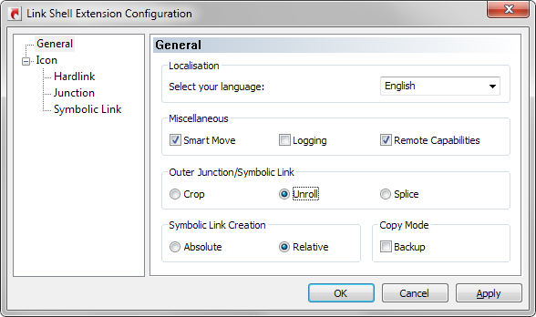
Localisation
Link Shell Extension's UI and commands are available in a few languages. You can choose from
- English(default)
- Chinese
- Czech
- French
- German
- Greek
- Italian
- Japanese
- Korean
- Polish
- Portuguese Brazilian
- Russian
- Slovak
- Spanish
- Swedish
- Turkish
- Ukrainian
Smart Move
It might be useful to totally switch off Smart Move,
if there are folders with really much folders.
This can be acchieved by ticking the Smart Move checkbox.
Logging
All output of a LSE operation like SmartCopy, SmartMirror, or Delorean Copy is logged to the file %TEMP%\LinkShellExtension.log
Remote Capabilities
It might be useful to totally switch off Remote Capabilities,
if there are lots of 'dead network drives' around.
This can be acchieved by ticking the Remote Capabilities checkbox.
Outer Junction/Symbolic Link Handling
Decide whether Outer Junctions should be handled as Crop,
be Unrolled, which is the default, or Spliced.
Symbolic Link Creation
By selecting either relative or absolute Link Shell Extension will
create the target of Symbolic Links respective.
Copy Mode
By checking the Backup Link Shell Extension will run in Backup Mode. On WindowsXP
this check box is grayed and its content set to unchecked, if the current user does not have sufficient privileges.
Changing any settings related to overlay icons will ask for a restart of explorer when Apply or Ok is pressed.
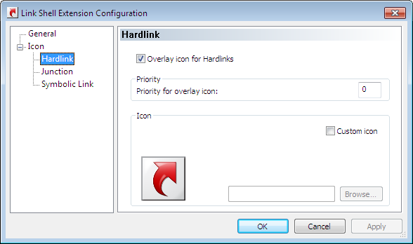
Overlay Icon
Sometimes it might be useful to totally disable certain overlay icons from Link Shell Extension, which can be acchieved by ticking the checkbox for overlay icons.
Priority
Only one overlay icon can be shown with an icon, but many overlay handlers might apply
to provide the overlay icon. To sort this out each overlay handler can specify a priority
to explorer and explorer shows the overlay icon with highest priority.
High priority means lower number, with 0 as the highest priority
Custom Icon
By ticking the checkbox for custom icon the Browse... button gets enabled,
and an icon can be selected.
Keep in mind that custom icons are specific to each user.
General
Windows Vista and Windows7/8/10 are a little bit special, because overlay icons for 256x256 must not
be in the lower left corner of the icon, and must not be already smaller to perfectly 'overlay'
an icon. 256x256 overlay icons must fill up the complete available icon, and also must not be resized.
Vista does that for you for 256x256 icons.
Or in other words Vista takes any 256x256 icon and resizes it to 92x92, moves it to the left lower corner and overlays.
For all other resolutions smaller than 256x256, Vista works in the same way as XP, you have to prepare an overlay icon in the lower left corner.
Furthermore Vista icons should not be saved 'compressed', because XP can not read compressed icons.
For my investigations the icon editor of choice capable of dealing with Vista icons was RealWorld Icon Editor
Apply Changes
When you press OK or Apply on LSEConfigs dialog, settings will be taken over.
If changes were made to Link Shell Extensions language settings or
settings related to overlay icons, you will be asked to confirm a restart
of explorer.exe, so that your changes become effective. Restarting
explorer.exe means, that e.g. any copy operation or other pending operation
within explorer.exe is interrupted.
So what are Hardlinks? It is common to think of a file as being an association between a file name and a data object. Using Windows Explorer, the file system can be readily browsed, showing a 1:1 relationship between the file name and the data object, but this 1:1 relationship does not hold for all file systems.
Some file systems, including UFS, XFS, and NTFS have a N:1 relationship between file name and the data object, hence there can be more than one directory entry for a file.
So, how does one create multiple entries for the same data object? In Unix there is a command line utility ln, which is used to create link entries for existing files, hence there are many file names, or so called Hardlinks, for the one data object.
For each HardLink created, the file system increments a reference count stored with the data object, i.e. it stores how many file names refer to the data object, this counter is maintained (by the file system) within the data object itself. When a file name referencing a data object is deleted, the data object’s reference count is decremented by one. The data object itself only gets deleted when the reference count is decremented to zero.
The reference count is the only way of determining whether there are multiple file name references to a data object, and it only informs of their number NOT there whereabouts.
Junctions are wormholes in the tree structure of a directed graph. By browsing a Junction a maybe far distant location in the file system is made available. Modifying, Creating, Renaming and Deleting files within a junction tree structure operates at the junction target, i.e. if you delete a file in a Junction it is deleted at the original location.
Symbolic Links are to files what Junctions are to folders in that they are both transparent and Symbolic. Transparency means that an application can access them just as they would any other file, Symbolism means that the data objects can reside on any available volume, i.e. they are not limited to a single volume like Hardlinks. Symbolic Links differ from Shortcuts in that they offer a transparent pathway to the desired data object, with a shortcut (.lnk), something has to read and interpret the content of the shortcut file and then open the file that it references (i.e. it is a two step process). When an application uses a symlink it gains immediate access to the data object referenced by the symlink (i.e. it is a one step process).
- Supported platforms are NT4/W2K/WXP/W2K3/W2K3R2/W2K8/W2K8R2/W2K12/W2K12R2/WXP64/Vista/Vista/Windows7/8/10 in 32bit, 64bit or Itanium.
- Hardlinks can only be made on NTFS volumes, under the supported platforms.
- Hardlinks can only be made within one NTFS volumes, and can not span across NTFS volumes.
- Junctions can not be created on NTFS volumes with NT4.
- The Pick Link Source and Drop ... choices are only visible, if it’s possible to create Hardlinks/Junctions/Symbolic Links. E.G.: If you select a file on a FAT drive and press the action button, you wont see the Pick Link Source in the action menu, because FAT file systems, don't support Hardlinks/Junctions/Symbolic Links. This also happens, if you select source files on a network drive, or select a file as destination, etc.
- There is an OS limit of creating more than 1023 hardlinks per file. This is less known, but it is there.
- ReFs does not support hardlinks.
- Windows XP does by default not support symbolic links, but there is a driver to enable symbolic links also under Windows XP
-
Q: On Windows7/8/10, the Save As... box shows symlinks with the white "shortcut"
overlay, instead of the green symlink overlay.
A: This happens if the processes shown during installation of Link Shell Extension were not closed. If you really run into this rare situation, a reboot will help.
-
Q: However the value of the reference count is not updated when hardlinks are deleted.
That is, when I add new hardlinks the value increases properly, but when I delete
hardlinks, the value does not change. Is that a bug? Or there is a way of refreshing
the Windows Explorer?
A: Once a file is deleted in Explorer it is moved into Recycle Bin, but not really deleted. If you press Shift-Del for deleting a file instead of just pressing Del, the file really gets deleted and the reference count is decremented.
-
Q: I could'nt make a successful hardlink for image or vector files - I mean, I was
able to *make* the hardlink copy, but when I modified one file it didnt affect the other.
I'm wondering do you know why this might be - could it be my otherwise quite normal computer (!)
or could it be something to do with the hard link proccess ?
A: You were able to make hardlinks successfully, but when you open a hardlinked file for edit, it depends on the editor associated to the file if the file either gets
- opened, changed, the original deleted, and the new one saved ( ==> link broken )
- opened, changed, and saved back ( ==> link alive )
-
Q: When I deleted a source directory, its junction point
is left behind in an non-operational state.
Is there a way to prevent this? That is, for example, is it possible to automatically delete the junction points if the associated source is deleted? Or, is it possible to have a program prune such orphaned junctions afterwards?
A: No sorry, Junctions are a one way relation, and if the targets disappears the junction points to an orphaned destination.
If you have SmartMove enabled, at least inner junctions/symbolic links are adapted
-
Q: When I delete a symbolic link, which points to a zipped folder
by pressing DEL, later on when I want to empty the recycle bin, explorer denies
by showing me error message 0x80071128. What's wrong?
A: Unfortunatley this is a bug in Explorer, and it only happens to symbolic links pointing to .zip files. The workaround is to move it manually out of recycle bin rename it, and then delete it once more.
-
Q: I have created a symbolic link to an .exe and when I double
click on it, I get the following error message:
The specified path does not exist. Check the path and try again.
A: Unfortunatley this is a bug in Explorer, and I don't have a clue how to come around this in explorer.
If you start the symlink to an .exe from a command prompt it works fine, and even third party explorers like SpeedCommander can do this, but explorer seems to have a limitation
Does anybody know the registry hack to enable this in explorer.exe? Drop me a line. -
Q: I double click on a symlink in explorer, which e.g. points to an .xls, and the explorer asks me to
choose a program to open it.
A: With KB3039066 Microsoft changed the behaviour of symlinks. Uninstall it and it will work again. See also Symbolic Link Type Changed
-
Q: The overlay icons do not show up
A: The number of different icon overlay handlers that the system can support is limited by the amount of space available for icon overlays in the system image list. There are currently fifteen slots allotted for icon overlays, some of which are reserved by the system.
All is controlled by the alphabetical order of OverlayHandlers under
HKEY_LOCAL_MACHINE\SOFTWARE\Microsoft\Windows\CurrentVersion\Explorer\ShellIconOverlayIdentifiers
If the OverlayHandlers for LinkShellExtension somehow slipped to a slot greater 15 under 32bit Windows or greater 11 with 64bit Windows, the LSE Overlay Icons won't show up.To manually boost the priority of LSE OverlayIcons open the above registry location with regedit and rename
HardLinkMenu --> 0HardLinkMenu
IconOverlayHardLink --> 0IconOverlayHardLink
IconOverlaySymbolicLink --> 0IconOverlaySymbolicLink
and either restart the explorer or log-off and log-on again. The point here is to change the alphabetical order by prepeding a 0. With Windows 10, a 0 might not help but prepending a blank should do it. See below: -
Q: The symbolic link overlay icons do not show up under Windows 10
A: See one FAQ above and raise the prio of IconOverlaySymbolicLink under
HKEY_LOCAL_MACHINE\SOFTWARE\Microsoft\Windows\CurrentVersion\Explorer\ShellIconOverlayIdentifiers
by prepending two blanks.
IconOverlaySymbolicLink --> ' 'IconOverlaySymbolicLink
and either restart the explorer or log-off and log-on again. The point here is to change the alphabetical order by prepeding blanks. -
Q: I'm trying to store Dropbox files only on removable storage instead of the
internal 128gb of storage. My DropBox already contains lots of files. How do I accomplish redirecting
the dropbox folder to the removeable storage?
A:
- Copy the whole dropbox folder from the internal storage under c:\users\[username]\dropbox to e.g x:\data\dropbox
- Rename the dropbox folder c:\users\[username]\dropbox to e.g c:\users\[username]\dropbox_org
- Pick Link Source x:\data\dropbox
- In c:\users\[username] use Drop as and select Symbolic Link for Windows7/8/10 or Junction for WindowsXP
- If everything went fine finally delete c:\users\[username]\dropbox_org
-
Q: When I create Symbolic links they appear in Explorer as 0 bytes. I cannot remember if this is
expected or not?
A: The resulting Symbolic Links show as 0 bytes in explorer.exe, that's expected.
-
Q: I only changed the attribute of a file, even the timestamp and content are the same, but --delorean copies the
file instead of linking to the old backupsets and just changing the attributes in the current backup set.
A: The files in the backup sets of --delorean are hardlinked if they are the same. NTFS provides one set of timestamps and attributes for all hardlink-siblings of a file, so if a file needs different attributes in a backup, it has to be copied.
-
Q: With WindowsXP I try to 'DEL' a directory, which is referenced via a junction or mountpoint. I get an 'Access Denied' message.
What's wrong?
A: Explorer.exe has a problem with Junctions and Mountpoint in that very case.
-
Q: Broken Junctions (with non-existent targets) have their overlay icons displayed, but right clicking on them in Windows Explorer of
Windows7 x64 SP1 and choosing "Properties" does not bring up the "Link Properties" tab.
Consequently the information where the broken Junction is trying to point is not accessible and cannot be corrected manually.
A: Unfortunatley this is an explorer problem, and LSE has no chance to intercept. Broken symlinks/juncitons can be easily repaired by the replacement junction/symbolic link feature
-
Q: When I right click a symbolic link and go to properties, and click on Link properties, if the path contained inside is invalid,
will give you the message "The name '(invalid path goes here)' specified in the Target box is not valid. Make sure the path and file name are correc.
A: Unfortunatley this is an explorer problem, and LSE has no chance to intercept. Broken symlinks/juncitons can be easily repaired by the replacement junction/symbolic link feature
| in progress |
Version 4.0.0.0
|
| October 15, 2019 |
Version 3.9.2.6
|
| December 28, 2018 |
Version 3.9.0.2
|
| December 2, 2018 |
Version 3.8.7.2
|
| April 19, 2016 |
Version 3.8.6.8
|
| January 10, 2016 |
Version 3.8.6.6
|
| June 3, 2014 |
Version 3.8.5.1
|
| December 29, 2013 |
Version 3.7.5.9
|
| August 23, 2013 |
Version 3.7.5.1
|
| August 4th, 2013 |
Version 3.7.5.0
|
| June 24th, 2012 |
Version 3.7.2.0
|
| March 9th 2012 |
Version 3.6.5.3
|
| April 17th 2011 |
Version 3.6.0.4
|
| November 21st 2010 |
Version 3.5.0.1
|
| October 3rd 2010 |
Version 3.4.0.2
|
| July 19th 2010 |
Version 3.3.5.8
|
| February 21st 2010 |
Version 3.2.2.4
|
| September 28th 2009 |
Version 3.1.6.0
|
| October 4th 2008 |
Version 3.0.0.1
|
| June 21st 2008 |
Version 2.9.5.3
|
| May 1st 2008 |
Version 2.9.0.3
|
| January 20th 2008 |
Version 2.8.0.6
|
| October 16th 2007 |
Version 2.7.1.0
|
| March 25th 2007 |
Version 2.7.0.1
|
| January 12th 2007 |
Version 2.6.0
|
| December 27th 2006 |
Version 2.5.1 released
|
| December 6th 2006 |
Version 2.4.0
released
|
| November 26th 2006 |
Version 2.3.0 released
|
| June 16th 2006 |
Version 2.2.2 released
|
| May 29th 2006 |
Version 2.2.1 released
|
| March 14th 2006 |
Version 2.1 released
|
| February 27th 2006 |
Version 2.0 released
|
| November 26th 2005 |
Version 1.7 released
|
| January 23rd 2002 |
Version 1.6 released
|
| October 27th 2001 |
Version 1.5 released
|
| March 23rd 2001 |
Version 1.201 released
|
| March 23rd 2001 |
Version 1.20 released
|
| March 20th 2001 |
Version 1.10 released
|
| May 8th 1999 | Version 1.00 released |
Felix Kasza for the hardlink basics with NT4.
Nullsoft for the great lean and mean nsis installer
Jean-Pierre Bergamin
for the
drag and drop
support samples.
Travis Illig
suggested to add the overlay icons for junctions, which he
uses in his
Junction Shell Extension.
Mark Russinovich for tips on
junction
Philip Daniels for a technical
writers documentation review
Daniel Thibault for the French
localisation, and for a dozen of bug reports and feature requests.
Masatoshi Kimura for the symbolic link
driver for WindowsXP.
Gerard Durand for the French translation of the documentation
- With Vista & Windows7 the column handler in explorer, providing the reference count, does not work, since Microsoft deprecated the interfaces with respect to this functionality.
- This program is provided as is. See license.txt from this distribution for legal issues.
- Link Shellextension uses tre as the regular expression machine. See the tre license.
LSE is and will be freeware, but if LSE was really helpful for you and saved lots of your time please think of donations either via PayPal
or by flattring me
or by sending me a gift certificate from
 .
.
or by donating bitcoins:
bc1quahckcfxvsr3ylt5lsaf9fd8v7kwzumw757zst

Link Shellextension also has its page on Facebook , where you can find announcements for new releases, and you can discuss feature requests
Link Shellextension broadcasts its release notes via RSS .
|
All Windows 64 |
This version contains the 64bit version of Link Shell Extension, but also
contains a 32bit version, which is installed in parallel to the 64bit version, to satisfy third party
filemanagers/explorers like total commander: All neccesary runtime dlls are already installed on your system, but if not grab it from here for 64bit and here for 32bit |
|
All Windows 32 |
Simply download and install
All neccesary runtime dlls are already installed on your system, but if not grab it from here. |
|
|
|
Download
|
All Windows Itanium |
The Itanium version is not supported anymore, but the last VS2005 based version 3.8.7.2 is kept for legacy. Please make sure that the necessary runtime .dlls are installed on your system. This prerequisites package can be downloaded from Microsoft: Afterwards install the
|
| Windows NT4 |
The version for Windows NT4 will be no more activley developed
on, and its functionality is frozen with version
Link Shell Extension 3.2.0.0 (1.13Mb), which basically has all
the important features.
|
|
Windows 2000 Windows XP |
The version for Windows 2000 and for Windows XP will be no more activley developed on, and its functionality is frozen with
Link Shell Extension 3.8.7.2 (32 bit)
and
Link Shell Extension 3.8.7.2 (64 bit)
|
|
Symbolic Link Driver for Windows XP |
The driver to enable even WindowsXP with
symbolic link functionality
is provided courtesy of Masatoshi Kimura. You can download the driver from his
homepage or from my site acting as a mirror.
|